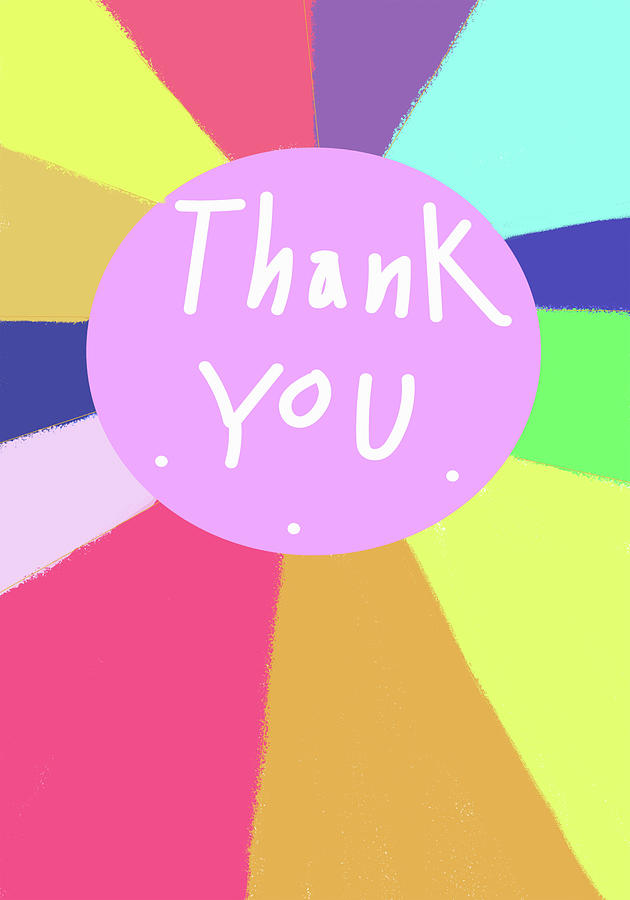

The Challenge
Pinterest traffic was growing, but pins felt generic and the jump to the website felt disjointed. Users were landing on the site but not engaging further.
What I Did
- Reviewed Pinterest analytics to see which pins and boards performed best.
- Tested poetic, emotionally resonant titles against plain/keyword-first titles.
- Refined titles, descriptions, visuals, alt text, hashtags, and board structure based on data.
- Created themed boards (Birthday Poems, Halloween Art, etc.) to match user search intent.
- Mapped the full journey from pin click → site visit → read/save/follow.
Outcome
Poetic titles consistently outperformed plain ones. By aligning the emotional tone of the pin with the content on the site, I reduced friction in the user journey.
Refined pins and boards now drive stronger, more consistent traffic and engagement to the site.
View Live Boards →Visual Example

Example of high-performing visual content